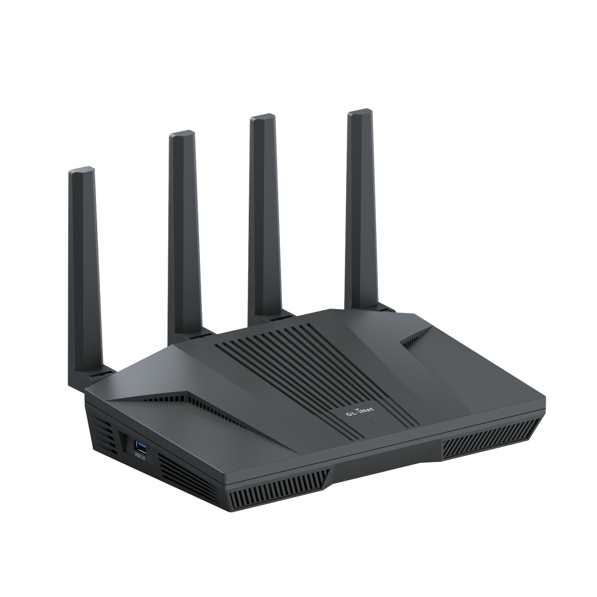
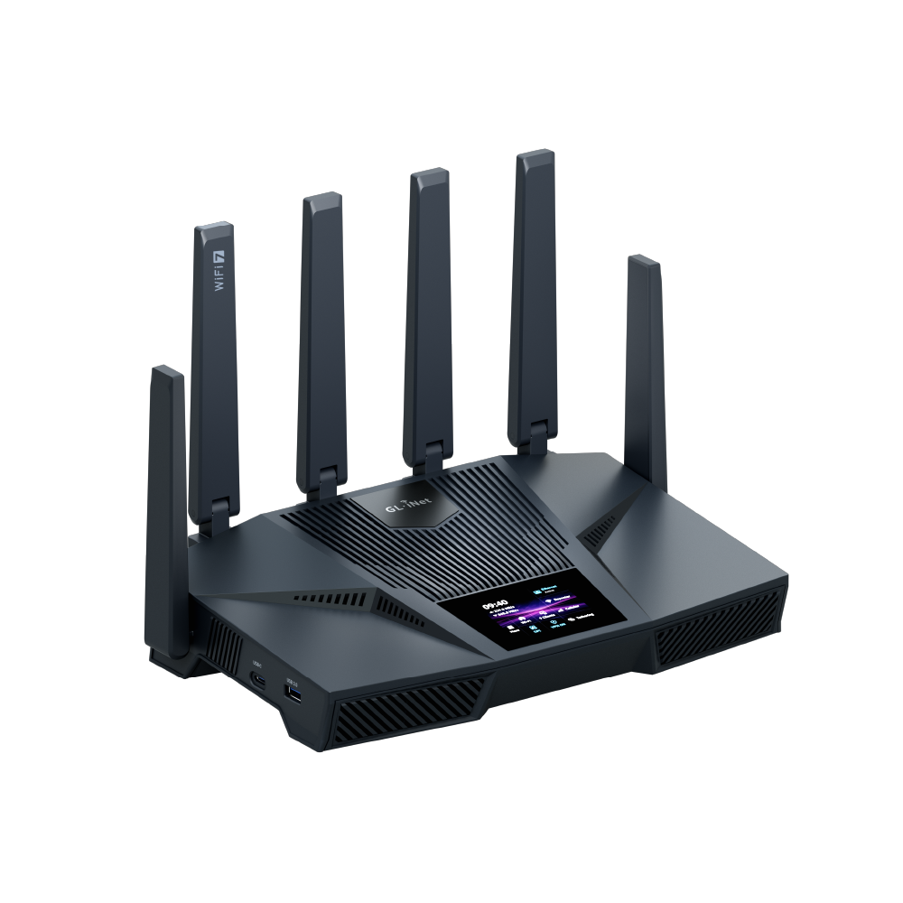
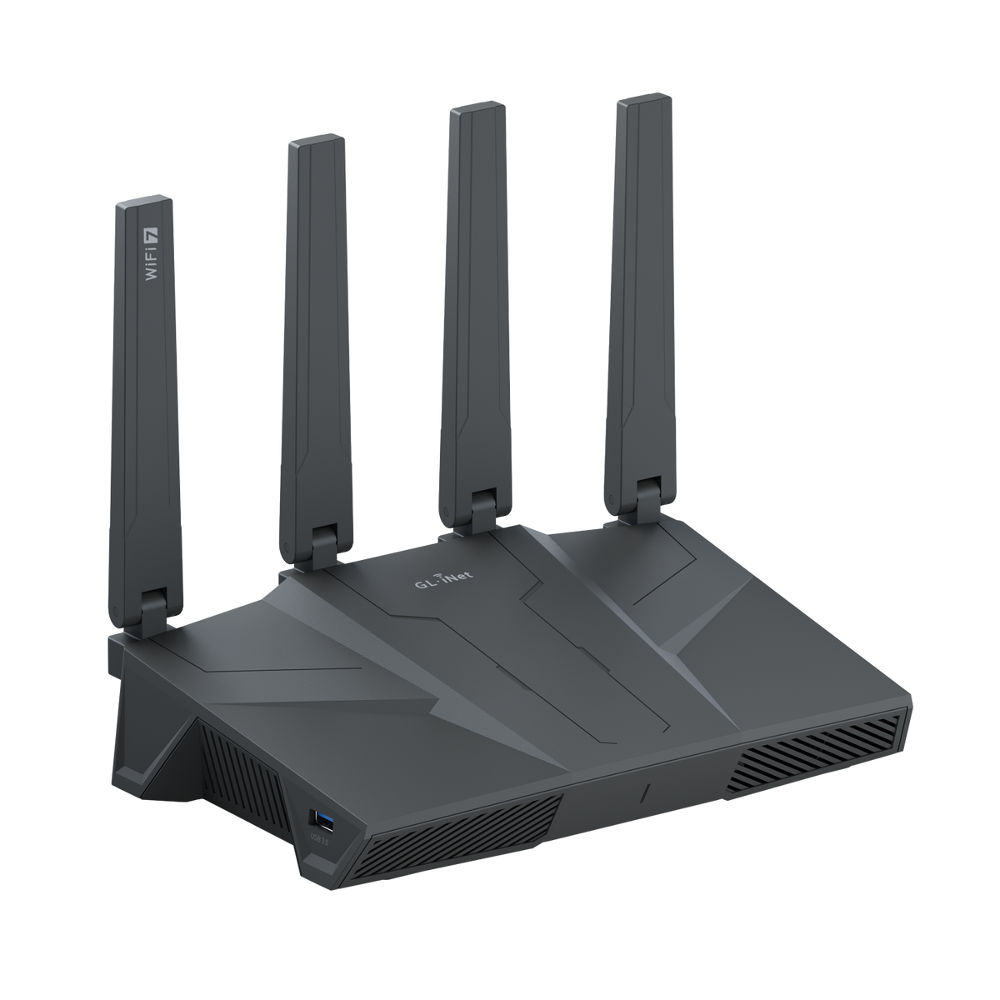

Guide · Networking
The best OpenWrt router to buy in 2026
If you are shopping for the best OpenWrt router, the useful answer is not a model name — it is a filter. OpenWrt runs on hundreds of boxes, but only a subset can be flashed to stock OpenWrt, keep working through a sysupgrade, and drive their radios properly. The short version: the GL.iNet Flint 2 (GL-MT6000) is the safest pick for most people, because it sits on MediaTek's MT7986 platform, one of the most actively ported targets in OpenWrt, with 1 GB of RAM and two 2.5G ports. Above it, the Flint 4 buys you 2 GB of RAM and 10G ports. The Flint 3 buys Wi-Fi 7 on a Qualcomm chip whose OpenWrt story is newer and thinner.
One caveat up front, because it matters more than any spec table. openwrt.org was behind a proof-of-work bot wall throughout this pass, so the Table of Hardware entries for these three models could not be re-verified here. Nothing below should be read as a confirmed statement that a given model runs mainline OpenWrt today. The hardware figures come from GL.iNet's own product pages; the support question you have to check yourself, and we show you how below.
What "best OpenWrt router" actually means
Three things separate a good OpenWrt box from a router that merely mentions OpenWrt on the box.
- An official device page. The Table of Hardware lists the exact model, the install method and the image to use. A vendor fork of OpenWrt is not the same as stock OpenWrt.
- A flash layout you can sysupgrade. Some vendor boxes ship a partition scheme or bootloader that cannot be moved to mainline. If the release notes don't describe a sysupgrade path for your model, assume you are staying on the vendor build.
- A supported radio driver. This is where Wi-Fi 7 gets interesting. The 802.11be number on the box says nothing about whether the 6 GHz radio works in mainline.
Everything else — port count, form factor, antennas — is preference. If you are still deciding between the whole family of local-first routers and hubs, our devices section covers the hardware we track.
The picks at a glance
| Model | Wi-Fi | SoC | RAM / storage | Wired |
|---|---|---|---|---|
| GL.iNet Flint 2 (GL-MT6000) | Wi-Fi 6, AX6000 | MediaTek quad-core 2.0 GHz | 1 GB DDR4 / 8 GB eMMC | 1 × 2.5G WAN, 1 × 2.5G WAN/LAN, 4 × 1G LAN |
| GL.iNet Flint 4 (GL-BE14000) | Wi-Fi 7, BE14000 | MediaTek quad-core Cortex-A73 1.8 GHz | 2 GB DDR4 / 64 GB eMMC | 10G RJ45, 10G SFP+, 2.5G WAN/LAN, 3 × 2.5G LAN, 4 × 1G LAN |
| GL.iNet Flint 3 (GL-BE9300) | Wi-Fi 7, BE9300 | Qualcomm quad-core 1.5 GHz | 1 GB DDR4 / 8 GB eMMC | 1 × 2.5G WAN, 1 × 2.5G WAN/LAN, 3 × 2.5G LAN |
Pick one: GL.iNet Flint 2 (GL-MT6000)

The Flint 2 is a dual-band AX6000 box: 1148 Mbps on 2.4 GHz and 4804 Mbps on 5 GHz, across 802.11a/b/g/n/ac/ax, per GL.iNet's product page. Inside is a MediaTek quad-core at 2.0 GHz with 1 GB DDR4 and 8 GB eMMC. Ports are one 2.5G WAN, one 2.5G WAN/LAN, four 1G LAN and USB 3.0. It draws under 20 W from a 12V/4A DC5521 supply, measures 233 × 137 × 53 mm and weighs 761 g, fanless, rated 0-40 °C.
Why this one first: the MT7986 platform is the target OpenWrt developers have spent the most effort on among current consumer silicon, and the vendor firmware is itself an OpenWrt-based build, so the mental model (LuCI, opkg, uci) carries over. Multi-WAN, dual Ethernet WAN, a VPN client and server, DFS and an AdGuard Home option are in the stock feature set.
The honest limitation is age: it is Wi-Fi 6, and its 2.5G WAN is only useful if the switch behind it can carry more than a gigabit. Check GL.iNet Flint 2 on Amazon for current price and stock.
Pick two: GL.iNet Flint 4 (GL-BE14000) for RAM and 10G

The Flint 4 is the only one of the three with 2 GB of DDR4, and the only one with 64 GB of eMMC — the difference between a router that runs a VPN server comfortably and one that starts swapping. It is tri-band BE14000: 688 Mbps at 2.4 GHz, 4323 Mbps at 5 GHz, 8646 Mbps at 6 GHz, on 802.11a/b/g/n/ac/ax/be, per GL.iNet. The SoC is a MediaTek quad-core Cortex-A73 at 1.8 GHz.
The port list is the real argument: one 10G RJ45 WAN/LAN, one 10G SFP+ WAN/LAN, one 2.5G WAN/LAN, three 2.5G LAN, four 1G LAN, plus USB 3.0 Type-A and Type-C. Power is 12V/4A, under 25 W idle and under 45 W with a USB load. It is a bigger box at 293 × 172 × 76 mm and 1166 g, so plan shelf space.
MediaTek silicon is the friendlier of the two Wi-Fi 7 paths for OpenWrt, but no Table of Hardware entry for this model could be verified in this pass. If you buy it, buy it for the ports and the RAM and treat the mainline flash as a project, not a promise. GL.iNet Flint 4 on Amazon.
Pick three: GL.iNet Flint 3 (GL-BE9300), with a caveat

Tri-band BE9300: 688 Mbps at 2.4 GHz, 2882 Mbps at 5 GHz, 5765 Mbps at 6 GHz. A Qualcomm quad-core at 1.5 GHz with 1 GB DDR4 and 8 GB eMMC. Every Ethernet port is multi-gig — one 2.5G WAN, one 2.5G WAN/LAN, three 2.5G LAN — with no 1G-only ports, plus USB 3.0. Power is 12V/4A at under 25 W idle, under 37.2 W with a USB load; 240 × 157 × 74 mm, 848 g. MLO and DFS are in the feature set. Source: GL.iNet.
Here is the caveat, and it is the reason this sits third. Qualcomm's ath12k driver is newer and thinner in OpenWrt than MediaTek's mt76, so "OpenWrt on Flint 3" should be treated as unproven until the Table of Hardware says otherwise. As a stock-firmware router it is fine hardware. As an OpenWrt project box, it is the one to be cautious about. GL.iNet Flint 3 on Amazon.
How to verify support before you pay
- Find your exact model in the OpenWrt Table of Hardware, including the hardware revision and regional variant. Sister models are not interchangeable.
- Open the device page and read the install method: some boxes need a vendor-specific image, a TFTP recovery, or an OEM bootloader step.
- Read the release notes for the OpenWrt version you intend to run and confirm your model is listed with working radios.
- Check what breaks. 6 GHz, MLO and hardware offload are the usual casualties on new silicon.
- Only then buy. If the device page does not exist for your model, you are buying a vendor router, not an OpenWrt router.
Gotchas worth knowing
- "Runs OpenWrt" is not "officially supported". Many vendor boxes ship a fork that cannot be sysupgraded to stock OpenWrt.
- RAM is the quiet constraint. 1 GB is fine for routing plus a few packages. AdGuard Home, Docker or a VPN server on the same box wants 2 GB.
- Multi-gig only helps end to end. A 2.5G WAN into a 1G switch buys nothing.
- Wi-Fi 7 is a driver question. ath12k versus mt76 matters more than the BE number on the box.
If you are new to OpenWrt
OpenWrt is a router operating system, not a Home Assistant add-on, but the two live well together: a box you control means local DNS, VLANs for IoT devices, and a firewall you can actually read. If your interest is the Zigbee or Z-Wave side of the network rather than Ethernet, the Zigbee hub guide covers coordinators, and the Home Assistant section tracks the rest. When a flash goes wrong, the recovery is the vendor's bootloader, not a support ticket — read that procedure before you start, not after.
FAQ
What is the best router for OpenWrt right now?
For most people the GL.iNet Flint 2 (GL-MT6000) is the sane starting point: MediaTek MT7986 silicon, 1 GB of RAM, two 2.5G ports and an OpenWrt-based stock firmware you can replace. The catch is that official support has to be confirmed per model on the OpenWrt Table of Hardware before you flash anything.
Which OpenWrt compatible routers are actually worth buying?
Buy hardware with a recent MediaTek or Qualcomm SoC, at least 1 GB of RAM, and a supported flash layout. Among current GL.iNet boxes that points at the Flint 2 for Wi-Fi 6, the Flint 4 if you need 2 GB of RAM and 10G ports, and the Flint 3 only if you accept that Wi-Fi 7 support in mainline OpenWrt is still thin.
Does OpenWrt support Wi-Fi 7 yet?
It depends on the driver, not the radio spec sheet. MediaTek's mt76 path is further along than Qualcomm's ath12k for 802.11be, and 6 GHz behaviour varies by model. Check the device's Table of Hardware entry and the release notes for the exact model before assuming a BE-class router works in mainline OpenWrt.
Is the GL.iNet Flint 2 still the best OpenWrt router, or should I get a Flint 3?
The Flint 2 is the safer buy: MediaTek silicon that is widely ported, 1 GB RAM and multi-gig Ethernet at Wi-Fi 6 speeds. The Flint 3 adds tri-band Wi-Fi 7 and three 2.5G LAN ports, but it runs a Qualcomm platform whose OpenWrt support is newer and thinner, so treat it as unproven for a mainline flash.
Can I flash stock OpenWrt on a GL.iNet router, or am I stuck with the vendor firmware?
GL.iNet ships its own OpenWrt-based build, which is not the same thing as stock OpenWrt. On models with an official Table of Hardware entry you can flash the release image, but some vendor boxes cannot be sysupgraded to mainline at all. Verify both the device page and the release notes for your exact model first.
Do I need 2 GB of RAM for an OpenWrt router?
Not for plain routing and a handful of packages: 1 GB is comfortable there. Step up to 2 GB if you plan to run AdGuard Home, Docker containers or a VPN server on the same box, because those services and their lists eat memory that the routing stack also wants.
- Primary sources
- GL.iNet Flint 2 (GL-MT6000); GL.iNet Flint 4 (GL-BE14000); GL.iNet Flint 3 (GL-BE9300)
As an Amazon Associate, HA News earns from qualifying purchases.